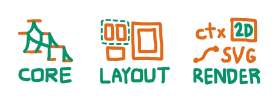

This note is about Alga. The core of alga is really about a certain funky sort of multidirectional computation, but it was designed to solve some layout language problems. In particular, it was designed to implement a relational layout combinator API similar to (and based on) Bluefish's with some additional properties I wanted.
Alga has three layers, the core, the layout API, and the renderer-specific API. So far I've only made a canvas-2D-specific API, but I think it would only take a couple hours to make an HTML or SVG or WebGL one.
Alga core's multidirectional evaluation makes it effective for expressing direct-manipulable layouts. You can change any part of the layout, and any related parts of the diagram will be recomputed to respect relationships.
Check out an example:
// imports and canvas set-up code are not shown in this code
const b1 = DraggableBox("yellowgreen");
const b2 = DraggableBox("orangered");
const b3 = DraggableBox("violet");
const b4 = DraggableBox("cornflowerblue");
b2.left = b1.right + 5;
b4.left = b3.right + 5;
const g1 = Outline(Group2(b1, b2));
const g2 = Outline(Group2(b3, b4));
g2.top = g1.bottom.plus(15);
g1.top = 20;
g1.left = 20;
Line(g1.centerBottom, g2.centerTop);